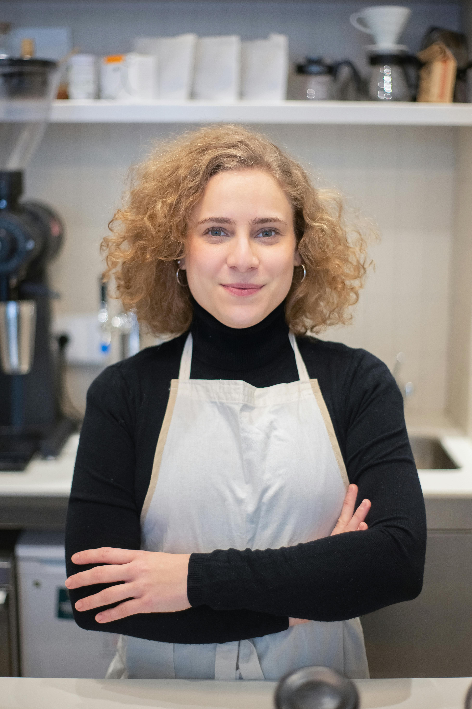

Nossa História
Do sonho à primeira xícara
A Café Velvet nasceu em 2018 de um sonho simples: criar um lugar onde as pessoas pudessem desacelerar. Marina Oliveira, fundadora e barista apaixonada, passou anos estudando a cultura do café em cidades como São Paulo, Lisboa e Cidade do México antes de abrir as portas do Velvet em Florianópolis. Mais do que uma cafeteria, o Velvet é um ponto de encontro. Aqui, cada detalhe foi pensado com cuidado — da música ambiente à temperatura ideal de extração do espresso.
Valores
💛 Amor
— Cada preparo é feito com atenção e cuidado, como se fosse para um amigo próximo.
🌱 Qualidade
— Ingredientes frescos, grãos certificados e processos artesanais em tudo que fazemos.
🤝 Comunidade
— Apoiamos produtores locais e acreditamos que um bom café aproxima as pessoas.
